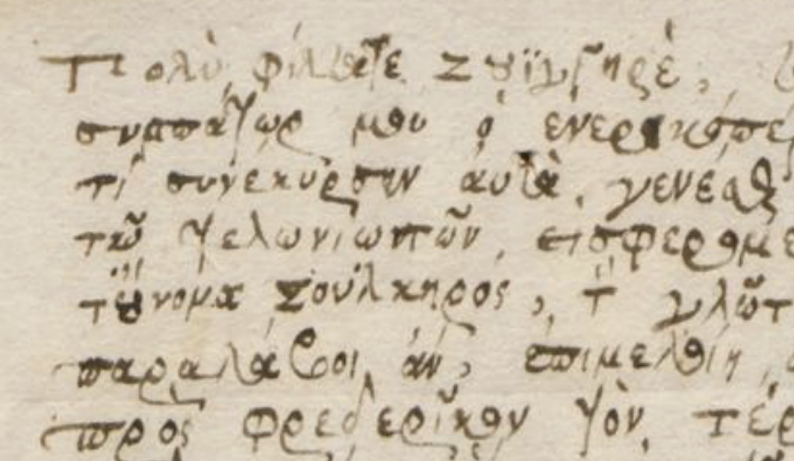

FATHERS, COLLEAGUES, FRIENDS AND STUDENTS

Traces of sustained exchanges between Swiss and British individuals are amongst the most fascinating aspects of the SwissBritNet corpus. Sometimes just two or three letters are enough to glimpse a developing friendship, a theological debate, business relationship or networking effort. Letters also served to keep in touch after a student returned to his own country, and in some cases, these contacts continued in the following generation: In the Buxtorf and Zwinger families from Basel, for example, father, son and grandson corresponded with friends in England.
In the 1580s, the English physician and MP Thomas Moffet addressed 26 letters to Theodor Zwinger the Elder. The English Hebraist Hugh Broughton exchanged at least 23 letters, mostly in Classical Greek, with the Basel Professor Jacob Zwinger, and was also in touch with Johannes Buxtorf the Elder. Jacob Zwinger in turn corresponded with the English baron Edward Zouche, whose son James, a courtier, wrote warmly to Johann Jacob Frey to urge his return to England in the mid-1630s. After Frey’s early death prevented this, his posthumous son visited his father’s mentors on his own iter literarium. Great affection for a Swiss student is also evident in the letters which Daniel and Elizabeth Penington wrote to their lodger and “son” Johann Heinrich Hummel after his return to Switzerland. Hummel, a student from Bern, had ended up in England because of a shipwreck en route to Holland and then spent several years in London.
A more formal kind of correspondence went on between academics. The Irish Archbishop James Ussher exchanged elaborately courteous letters with the Geneva professor Friedrich Spanheim and the Hebraist Johannes Buxtorf the Younger from Basel. These men may never have actually met, but they expressed great respect for each other’s work. Similarly, Théodore Tronchin from Geneva wrote to James Ussher to ask for support for his son Louis, who was embarking on his iter literarium, and a few months later, young Louis Tronchin wrote to Ussher himself from Leiden, probably en route to England. On the other hand, the two letters to Johann Jacob Frey which we have from the Oxford scholar John Gregory are part of a scholarly exchange which must have started when they were both studying at Christ Church College. Viscount Dungarvan, the young Anglo-Irish nobleman who was chaperoned by Frey on his continental Grand Tour, regularly reported to his father in Dublin, as did his younger brothers, who travelled with a tutor from Geneva.
The liveliest letters of all were prompted by an Englishman in Switzerland: Sir Oliver Fleming wrote charming multilingual messages during his tenure as the English "resident" in Zurich in the 1630s. He also exasperated his Swiss acquaintances with the huge debts he incurred as he was struggling to maintain an appropriately ambassadorial lifestyle on insufficient funds; the Basel professor Wolfgang Meyer, for example, was forced into a series of increasingly desperate letters on behalf of his underpaid son Emanuel, who was working for Fleming in London in the 1640s. These messages markedly contrast with the insouciance of Wolfgang Meyer’s own student years in Cambridge: during the 1590s, he was admonished by his older brother in Basel not to spend too much time and money on playgoing!
Kaspar Thomann from Zurich was in Britain a few years later: the elaborate letters he wrote home to find support for his studies at Oxford represent a very different, increasingly lonely, student experience. Finally, in the 1660s, the studies of Johann Rudolf Battier and Johann Jacob Buxtorf in Oxford and Cambridge were disrupted by the Plague and the Great Fire of London. The resulting delays in academic achievement had to be explained to sponsors back in Basel – yet another colour on the rich palette of Swiss-British epistolary exchanges in the 17th century.
Regula Hohl Trillini